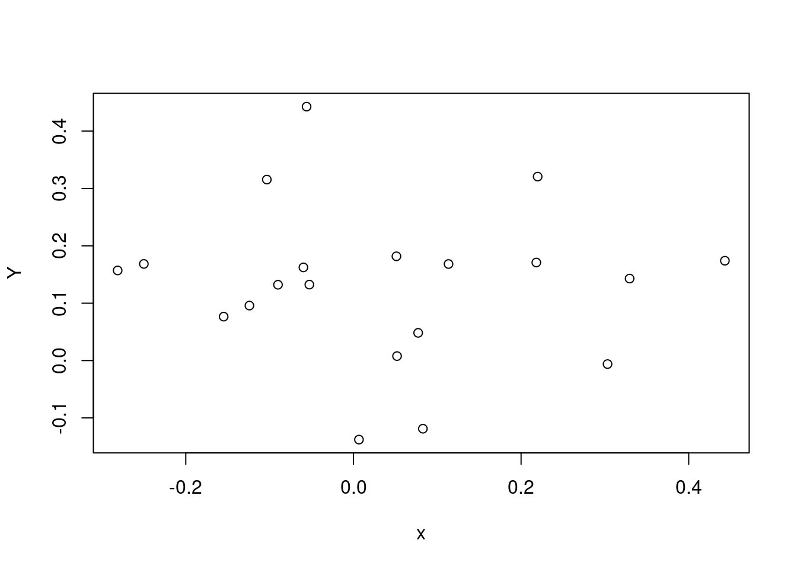
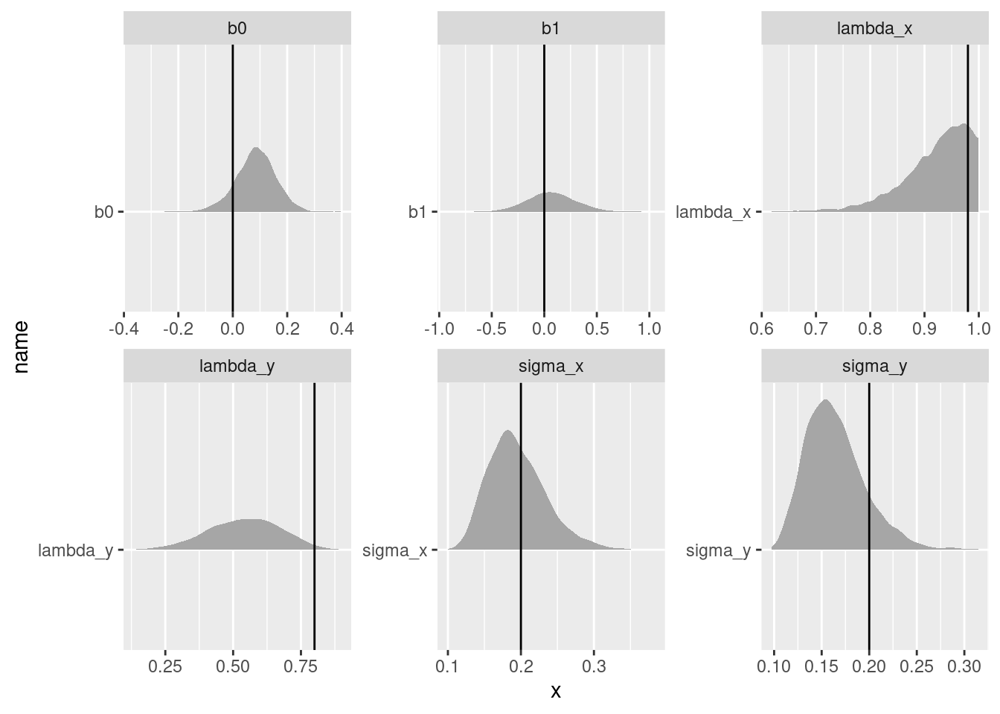

library(targets)
library(ggplot2)
library(tidyverse)
library(tidybayes)I’ve always wanted to learn more about phylogenetic regressions, and thanks to my colleauge Alex Fuster I recently had the opportunity to sit down and work on them. The literature on the topic is confusing, large, and not always clear about what model is being fit. I relied heavily on two resources:
- one book, a free online resource from Tony Ives (Ives, n.d.)
- a preprint, an excellent review of the use and misuse of Pagel’s Lambda by Pearse, Davies, and Wolkovich (n.d.)
Why a phylogenetic regression?
Suppose you have two traits, measured across many different species – say, social group size (Trait X) and brain size (Trait Y). You want to test the hypothesis that bigger social groups mean a bigger brain. However there’s a catch: some of the species are closely related, and others are not. Its entirely possible that any apparent correlation between Trait X and Trait Y comes from random chance: both traits change randomly along evolutionary time. That means that distantly related species have more time to become different to each other, and close relatives have less “time apart” and are therefore less likely to be different in their two traits.
Because every kind of cross-species comparison involves a group of species with a phylogenetic structure, “controlling for phylogeny” has become very common in these kinds of studies. Also, because we are usually missing traits for at least some species in our studies, people often use phylogeny as a guide for guessing what trait values are present in the animals that we haven’t measured.
Recipe for phylogeny
I love the large and flexible toolbox of Bayesian methods because it can be adapted to fit such a huge array of models – virtually all the models that ecologists want to fit! However, there’s a catch: to fit a model using Stan (or something similar) you have to know exactly what model you’re fitting. However, because these regressions are usually fit using custom software, it can be a challenge to dig to find the exact equations being fit!
Using the two resources mentioned above, I was able to write down (I hope!) the equation for the model like this:
\[ \begin{align} y_i &= \bar{y} + \beta_1 x_i + a_{s[i]} \\ a_{s} &\sim \text{MVNormal}(0, \Sigma_a)\\ \Sigma_a &= \begin{bmatrix} \sigma_a^2 & \lambda_a \cdot \sigma_{12} & \cdots & \lambda_a \cdot \sigma_{1,s} \\ \lambda_a \cdot \sigma_{21} & \sigma_a^2 & \cdots & \lambda_a \cdot \sigma_{2,s} \\ \vdots & \vdots & \ddots & \vdots \\ \lambda_a \cdot \sigma_{s,1} & \lambda_a \cdot \sigma_{s,2} & \cdots & \sigma_a^2 \end{bmatrix} \\ x_i &= \bar{x} + b_{s[i]} \\ b_{s} &\sim \text{MVNormal}(0, \Sigma_b)\\ \Sigma_b &= \begin{bmatrix} \sigma_b^2 & \lambda_b \cdot \sigma_{12} & \cdots & \lambda_b \cdot \sigma_{1,s} \\ \lambda_b \cdot \sigma_{21} & \sigma_b^2 & \cdots & \lambda_b \cdot \sigma_{2,s} \\ \vdots & \vdots & \ddots & \vdots \\ \lambda_b \cdot \sigma_{s,1} & \lambda_b \cdot \sigma_{s,2} & \cdots & \sigma_b^2 \end{bmatrix} \end{align} \tag{1}\]
Note
You can see that there is no likelihood for the \(y_i\) and \(x_i\) values. That’s because I’m starting from a simple case where we know the true values for each species. The only thing to estimate is how variable these traits are among species, and how much of that variation correlates with phylogeny. Later I’ll show an example that is closer to real life.
You can see that there are two big variance-covariance matrices here, for the effects of phylogeny on \(y\) and \(x\). These covariance matrices have three ingredients that are all put together:
- the base How far apart are species on the phylogeny? Many ecologists work with trees where all the tips end at the present day – so all species have the same amount of time going back to their last common ancestor. For trees like this, the diagonal is 1 (i.e., 100% of the evolutionary time). The off-diagonals are the proportion of this total time which is shared between species.
- the flavour This is a model of species averages. If there were no effect of phylogeny at all, we would still expect species to be a little different. But how different are species from each other? That is controlled by a standard deviation, \(\sigma\), which we multiply the whole matrix by to scale it.
- the secret sauce The off-diagnal elements of \(\Sigma\) are multiplied by another number between 0 and 1: this is “Pagel’s Lambda”. It acts like a tuning knob, adjusting the amount of phylogenetic flavour that makes it into the model. When \(\lambda\) is 1, we have the maximum amount of covariance coming from the phylogeny. When \(\lambda\) is 0, we are back to an identity matrix and the species are independent.
There’s another way to write this equation that makes these three parts more clear to see. First we have to make \(V_{phy}\), which is the phylogenetic variance-covariance matrix. This has variances and covariances for each species on our tree. For example, for 3 species the phylogenetic variance covariance matrix is:
\[ V_{phy} = \begin{bmatrix} \sigma_1^2 & \sigma_{12} & \sigma_{1,3} \\ \sigma_{2,1} & \sigma_2^2 & \sigma_{2,3} \\ \sigma_{3,1} & \sigma_{3,2} & \sigma_3^2 \end{bmatrix} \] The covariances are equal to the proportion of the tree that is shared between two species. The diagonal is the amount of time between the tree’s start and each species. This means that, for a tree where all the tips end at the present day, the diagonal is 1 and the off-diagonal is between 0 and 1.
Then, we can write the expression for \(\Sigma\) like this:
\[ \Sigma = \sigma^2 \lambda V_{phy} + \sigma^2 (1 - \lambda) \mathbf{I} \] This is equation 4 in Pearse, Davies, and Wolkovich (n.d.).
I can rewrite Equation 1 in this style:
\[ \begin{align} y_i &= \bar{y} + \beta_1 x_i + a_{s[i]} \\ a_{s} &\sim \text{MVNormal}(0, \Sigma_a)\\ \Sigma_a &= \sigma_a^2 \lambda_a V_{phy} + \sigma_a^2 (1 - \lambda_a) \mathbf{I} \\ x_i &= \bar{x} + b_{s[i]} \\ b_{s} &\sim \text{MVNormal}(0, \Sigma_b)\\ \Sigma_b &= \sigma_b^2 \lambda_b V_{phy} + \sigma_b^2 (1 - \lambda_b) \mathbf{I} \\ \end{align} \tag{2}\]
\[ \begin{align} y_i &\sim \text{Normal}(\bar{y} + \beta_1 x_i + a_{s[i]}, \sigma_y) \\ a_{s} &\sim \text{MVNormal}(0, \Sigma_a)\\ \Sigma_a &= \sigma_a^2 \lambda_a V_{phy} + \sigma_a^2 (1 - \lambda_a) \mathbf{I} \\ x_i &\sim \text{Normal}(\bar{x} + b_{s[i]}, \sigma_x) \\ b_{s} &\sim \text{MVNormal}(0, \Sigma_b)\\ \Sigma_b &= \sigma_b^2 \lambda_b V_{phy} + \sigma_b^2 (1 - \lambda_b) \mathbf{I} \\ \end{align} \tag{3}\]
You can see I’m using two different trait variances (\(\sigma_a\) and \(\sigma_b\)) and two different amounts of phylogenetic signal (\(\lambda_a\) and \(\lambda_b\)), one for each trait.
Data simulation
Here is simulation code from Ives (n.d.) , which generates a dataset where there is a signal for phylogeny and also a relationship between two traits of interest. I’ll use this code to generate a dataset and then estimate the known parameters with a Stan model:
## simulate data
set.seed(1618)
n <- 20
b0 <- 0
b1 <- 0
lambda_x <- .98
lambda_y <- .8
sigma_y <- .2
sigma_x <- .2
phy <- ape::compute.brlen(
ape::rtree(n=n),
method = "Grafen",
power = 1)
plot(phy)
phy.x <- phylolm::transf.branch.lengths(
phy=phy, model="lambda",
parameters=list(lambda = lambda_x))$tree
phy.e <- phylolm::transf.branch.lengths(
phy=phy, model="lambda",
parameters=list(lambda = lambda_y))$tree
x <- ape::rTraitCont(phy.x, model = "BM", sigma = sigma_x)
e <- ape::rTraitCont(phy.e, model = "BM", sigma = sigma_y)
x <- x[match(names(e), names(x))]
Y <- b0 + b1 * x + e
Y <- array(Y)
rownames(Y) <- phy$tip.label
plot(x, Y)
Here’s a simple Stan program which fits the model in Equation 3 to these simulated data.
phylo <- cmdstanr::cmdstan_model(here::here("posts/2024-09-27-phylo/phylo.stan"))
phylodata {
int n;
int s;
vector[n] x;
vector[n] y;
matrix[s, s] phyvcv;
}
parameters {
real b0;
real b1;
real sigma_x;
real sigma_y;
real logit_lambda_x;
real logit_lambda_y;
}
transformed parameters {
real<lower=0,upper=1> lambda_x;
lambda_x = inv_logit(logit_lambda_x);
// y
real<lower=0,upper=1> lambda_y;
lambda_y = inv_logit(logit_lambda_y);
}
model {
b0 ~ std_normal();
b1 ~ normal(.5, .5);
sigma_x ~ exponential(1);
sigma_y ~ exponential(1);
logit_lambda_x ~ normal(3, .2);
logit_lambda_y ~ normal(0, .2);
matrix[s, s] vcv_x;
vcv_x = add_diag(sigma_x^2*lambda_x*phyvcv, sigma_x^2*(1 - lambda_x));
matrix[s, s] vcv_y;
vcv_y = add_diag(sigma_y^2*lambda_y*phyvcv, sigma_y^2*(1 - lambda_y));
x ~ multi_normal(rep_vector(0, n), vcv_x);
y ~ multi_normal(b0 + b1*x, vcv_y);
}Now we’ll sample the model and plot the posterior distribution of some parameters against the truth:
phylo_sample <- phylo$sample(data = list(
n = n,
s = n,
x = x,
y = Y,
phyvcv = ape::vcv(phy)
),parallel_chains = 4, refresh = 1000)Running MCMC with 4 parallel chains...Chain 1 Iteration: 1 / 2000 [ 0%] (Warmup) Chain 2 Iteration: 1 / 2000 [ 0%] (Warmup) Chain 3 Iteration: 1 / 2000 [ 0%] (Warmup) Chain 4 Iteration: 1 / 2000 [ 0%] (Warmup) Chain 1 Iteration: 1000 / 2000 [ 50%] (Warmup)
Chain 1 Iteration: 1001 / 2000 [ 50%] (Sampling) Chain 2 Iteration: 1000 / 2000 [ 50%] (Warmup)
Chain 2 Iteration: 1001 / 2000 [ 50%] (Sampling)
Chain 2 Iteration: 2000 / 2000 [100%] (Sampling) Chain 3 Iteration: 1000 / 2000 [ 50%] (Warmup)
Chain 3 Iteration: 1001 / 2000 [ 50%] (Sampling)
Chain 4 Iteration: 1000 / 2000 [ 50%] (Warmup)
Chain 4 Iteration: 1001 / 2000 [ 50%] (Sampling)
Chain 2 finished in 0.3 seconds.
Chain 1 Iteration: 2000 / 2000 [100%] (Sampling)
Chain 3 Iteration: 2000 / 2000 [100%] (Sampling)
Chain 4 Iteration: 2000 / 2000 [100%] (Sampling)
Chain 1 finished in 0.3 seconds.
Chain 3 finished in 0.3 seconds.
Chain 4 finished in 0.3 seconds.
All 4 chains finished successfully.
Mean chain execution time: 0.3 seconds.
Total execution time: 0.5 seconds.make_rvar_df <- function(post_draws){
post_draws |>
posterior::as_draws_rvars() |>
# list any parameter that isn't a scalar
map_if(\(x) length(x)>1, list) |>
tibble::as_tibble()
}
plot_true_post <- function(truth_df, post_draws_df){
true_post_df <- truth_df |>
left_join(post_draws_df, by = "name")
true_post_df |>
ggplot(aes(y = name, dist = posterior))+
tidybayes::stat_dist_slab() +
geom_vline(aes(xintercept = value)) +
facet_wrap(~name, scales="free")
}
truth <- data.frame(sigma_x, sigma_y, b0,
b1, lambda_x, lambda_y) |>
pivot_longer(cols = everything())
posterior_dist_long <- make_rvar_df(phylo_sample) |>
select(b0:lambda_y) |>
pivot_longer(cols = everything(), values_to = "posterior")
plot_true_post(truth, post_draws_df = posterior_dist_long)We can see that, at least for these values, parameter recovery isn’t bad, especially for the coefficients \(\beta_0\) and \(\beta_1\). However, at least in this simulation, the parameters describing the phylogenetic signal are all underestimated.
Tips from the forum
I posted about this model in the Stan Discourse forum and I had the good luck to get feedback from Bob Carpenter! Here is the model after including those suggested changes:
phylo_forum <- cmdstanr::cmdstan_model(here::here("posts/2024-09-27-phylo/phylo_forum.stan"))
phylo_forumdata {
int<lower=0> n;
int<lower=0> s;
vector[n] x;
vector[n] y;
cov_matrix[s] phyvcv;
}
transformed data {
vector[n] zero_vec = rep_vector(0, n);
}
parameters {
real b0;
real<offset=0.5, multiplier=0.5> b1;
real<lower=0> sigma_x;
real<lower=0> sigma_y;
real<offset=3, multiplier=0.2> logit_lambda_x;
real<multiplier=0.2> logit_lambda_y;
}
transformed parameters {
real<lower=0, upper=1> lambda_x = inv_logit(logit_lambda_x);
real<lower=0, upper=1> lambda_y = inv_logit(logit_lambda_y);
}
model {
b0 ~ std_normal();
b1 ~ normal(0.5, 0.5);
sigma_x ~ exponential(1);
sigma_y ~ exponential(1);
logit_lambda_x ~ normal(3, .2);
logit_lambda_y ~ normal(0, .2);
matrix[s, s] vcv_x
= sigma_x^2 * add_diag(lambda_x * phyvcv, 1 - lambda_x);
matrix[s, s] vcv_y
= sigma_y^2 * add_diag(lambda_y * phyvcv, 1 - lambda_y);
x ~ multi_normal(zero_vec, vcv_x);
y ~ multi_normal(b0 + b1 * x, vcv_y);
}phylo_forum_sample <- phylo_forum$sample(data = list(
n = n,
s = n,
x = x,
y = Y,
phyvcv = ape::vcv(phy)
),parallel_chains = 4, refresh = 0)Running MCMC with 4 parallel chains...Chain 1 finished in 0.4 seconds.
Chain 2 finished in 0.4 seconds.
Chain 3 finished in 0.4 seconds.
Chain 4 finished in 0.4 seconds.
All 4 chains finished successfully.
Mean chain execution time: 0.4 seconds.
Total execution time: 0.5 seconds.truth <- data.frame(sigma_x, sigma_y, b0,
b1, lambda_x, lambda_y) |>
pivot_longer(cols = everything())
phylo_forum_sample_long <- make_rvar_df(phylo_forum_sample) |>
select(b0:lambda_y) |>
pivot_longer(cols = everything(), values_to = "posterior")
plot_true_post(truth, post_draws_df = phylo_forum_sample_long)We get get pretty similar results to the above!
and an even simpler strategy, replacing the lambda parameter on the logit scale with a beta:
phylo_beta <- cmdstanr::cmdstan_model(here::here("posts/2024-09-27-phylo/phylo_beta.stan"))
phylo_betadata {
int<lower=0> n;
int<lower=0> s;
vector[n] x;
vector[n] y;
cov_matrix[s] phyvcv;
}
transformed data {
vector[n] zero_vec = rep_vector(0, n);
}
parameters {
real b0;
real<offset=0.5, multiplier=0.5> b1;
real<lower=0> sigma_x;
real<lower=0> sigma_y;
real<lower=0,upper=1> lambda_x;
real<lower=0,upper=1> lambda_y;
}
model {
b0 ~ std_normal();
b1 ~ normal(0.5, 0.5);
sigma_x ~ exponential(1);
sigma_y ~ exponential(1);
lambda_x ~ beta(9, 1);
lambda_y ~ beta(5, 5);
matrix[s, s] vcv_x
= sigma_x^2 * add_diag(lambda_x * phyvcv, 1 - lambda_x);
matrix[s, s] vcv_y
= sigma_y^2 * add_diag(lambda_y * phyvcv, 1 - lambda_y);
x ~ multi_normal(zero_vec, vcv_x);
y ~ multi_normal(b0 + b1 * x, vcv_y);
}phylo_beta_sample <- phylo_beta$sample(data = list(
n = n,
s = n,
x = x,
y = Y,
phyvcv = ape::vcv(phy)
),parallel_chains = 4, refresh = 0)Running MCMC with 4 parallel chains...Chain 1 finished in 0.4 seconds.
Chain 3 finished in 0.4 seconds.
Chain 2 finished in 0.5 seconds.
Chain 4 finished in 0.4 seconds.
All 4 chains finished successfully.
Mean chain execution time: 0.4 seconds.
Total execution time: 0.6 seconds.phylo_beta_sample variable mean median sd mad q5 q95 rhat ess_bulk ess_tail
lp__ 48.08 48.42 1.84 1.68 44.56 50.43 1.00 1586 2164
b0 0.08 0.09 0.07 0.07 -0.04 0.20 1.00 4003 2241
b1 0.07 0.06 0.23 0.22 -0.30 0.45 1.00 4309 3115
sigma_x 0.19 0.19 0.04 0.04 0.14 0.27 1.00 3146 2817
sigma_y 0.16 0.16 0.03 0.03 0.12 0.22 1.00 3296 3381
lambda_x 0.92 0.93 0.06 0.06 0.80 0.99 1.00 3008 1832
lambda_y 0.54 0.55 0.13 0.14 0.32 0.75 1.00 3309 2876phylo_beta_sample_long <- make_rvar_df(phylo_beta_sample) |>
select(b0:lambda_y) |>
pivot_longer(cols = everything(), values_to = "posterior")
plot_true_post(truth, post_draws_df = phylo_beta_sample_long)
Repeated sampling of these traits
The simulation above is giving species means. However in our study we have more than one measurement per species. Measurements of “Trait X” and “Trait Y” are measured on different individuals. In fact, are coming from two completely different datasets! Of course, in the real-world application there will be all kinds of quirky differences between the two datasets: different amounts of effort per species and different species measured in each dataset.
library(tidyverse)
suppressPackageStartupMessages(library(ape))
set.seed(1618)
# set true parameter values
n <- 20
b0_x <- 4
b0_y <- .5
b_xy <- -.1
lam.x <- .98
lam.e <- .5
sigma_x <- .4
sigma_y <- .3
# simulate phylogeny
phy <- ape::compute.brlen(
ape::rtree(n=n),
method = "Grafen",
power = 1.5)
plot(phy)# get names from this matrix! needs to line up perfectly
phyvcv <- ape::vcv(phy)
distmat_names <- dimnames(phyvcv)[[1]]
# observations per species
n_obs <- 15
phy.x <- phylolm::transf.branch.lengths(
phy=phy, model="lambda",
parameters=list(lambda = lam.x))$tree
phy.e <- phylolm::transf.branch.lengths(
phy=phy, model="lambda",
parameters=list(lambda = lam.e))$tree
x <- ape::rTraitCont(phy.x, model = "BM", sigma = sigma_x)
e <- ape::rTraitCont(phy.e, model = "BM", sigma = sigma_y)
x <- x[match(names(e), names(x))]
## calculate Y
Y <- b0_y + b_xy * x + e
## calculate X
X <- b0_x + x
# Y <- array(Y)
names(Y) <- phy$tip.label
plot(X, Y)obs_xy_df <- tibble(X, Y, sp_name = names(x)) |>
mutate(
sp_id = as.numeric(
factor(sp_name,
levels = distmat_names))) |>
rowwise() |>
mutate(obs_x = list(
rnorm(n_obs, mean = X, sd = .3)),
obs_y = list(rnorm(n_obs, mean = Y, sd = .3)))
x_obs_df <- obs_xy_df |>
select(sp_id, obs_x) |> unnest(obs_x)
y_obs_df <- obs_xy_df |>
select(sp_id, obs_y) |> unnest(obs_y)fit a model that is ready for replication per species:
phylo_obs_cen <- cmdstanr::cmdstan_model(here::here("posts/2024-09-27-phylo/phylo_obs_cen.stan"))
phylo_obs_cendata {
int<lower=0> s;
// x trait
int<lower=0> n_x;
vector[n_x] x_obs;
array[n_x] int<lower=1,upper=s> sp_id_x;
// y trait
int<lower=0> n_y;
vector[n_y] y_obs;
array[n_y] int<lower=1,upper=s> sp_id_y;
cov_matrix[s] phyvcv;
}
transformed data {
vector[s] zero_vec = rep_vector(0, s);
}
parameters {
real<offset=2,multiplier=2> b0_x;
real<offset=.5,multiplier=.8> b0_y;
real<offset=0.5, multiplier=0.5> b_xy;
real<lower=0> sigma_x;
real<lower=0> sigma_y;
real<lower=0, upper=1> lambda_x;
real<lower=0, upper=1> lambda_y;
vector[s] x_avg;
vector[s] y_avg;
real<lower=0> sigma_x_obs;
real<lower=0> sigma_y_obs;
}
model {
b0_x ~ normal(2, 2);
b0_y ~ normal(.5, .8);
b_xy ~ normal(0, .2);
sigma_x ~ exponential(1);
sigma_y ~ exponential(1);
lambda_x ~ beta(9, 1);
lambda_y ~ beta(5, 5);
matrix[s, s] vcv_x
= sigma_x^2 * add_diag(lambda_x * phyvcv, 1 - lambda_x);
matrix[s, s] vcv_y
= sigma_y^2 * add_diag(lambda_y * phyvcv, 1 - lambda_y);
sigma_x_obs ~ exponential(1);
sigma_y_obs ~ exponential(1);
// species averages
x_avg ~ multi_normal(zero_vec, vcv_x);
y_avg ~ multi_normal(b_xy * x_avg, vcv_y);
// observations of these
x_obs ~ normal(b0_x + x_avg[sp_id_x], sigma_x_obs);
y_obs ~ normal(b0_y + y_avg[sp_id_y], sigma_y_obs);
}Sampling the model – this produces some warnings that are safe to ignore at this point.
phylo_obs_cen_samp <- phylo_obs_cen$sample(data = list(
s = n,
# trait x
n_x = nrow(x_obs_df),
x_obs = x_obs_df$obs_x,
sp_id_x = x_obs_df$sp_id,
# trait y
n_y = nrow(y_obs_df),
y_obs = y_obs_df$obs_y,
sp_id_y = y_obs_df$sp_id,
# phylogeny
phyvcv = phyvcv
),parallel_chains = 4, refresh = 0)Running MCMC with 4 parallel chains...Chain 1 finished in 3.1 seconds.
Chain 3 finished in 3.1 seconds.
Chain 2 finished in 3.4 seconds.
Chain 4 finished in 3.5 seconds.
All 4 chains finished successfully.
Mean chain execution time: 3.3 seconds.
Total execution time: 3.6 seconds.phylo_obs_cen_samp$summary(variables = c(
"b0_x", "b0_y", "b_xy", "sigma_x", "sigma_y", "lambda_x", "lambda_y", "sigma_x_obs", "sigma_y_obs"
))# A tibble: 9 × 10
variable mean median sd mad q5 q95 rhat ess_bulk ess_tail
<chr> <dbl> <dbl> <dbl> <dbl> <dbl> <dbl> <dbl> <dbl> <dbl>
1 b0_x 4.07 4.08 0.210 0.206 3.71 4.40 1.01 325. 412.
2 b0_y 0.620 0.624 0.138 0.131 0.384 0.834 1.01 340. 458.
3 b_xy -0.0456 -0.0454 0.161 0.157 -0.312 0.216 1.00 2158. 2701.
4 sigma_x 0.368 0.355 0.0861 0.0802 0.249 0.529 1.00 1610. 2143.
5 sigma_y 0.293 0.285 0.0665 0.0636 0.202 0.414 1.00 1150. 2272.
6 lambda_x 0.975 0.984 0.0275 0.0170 0.922 0.999 1.00 1866. 1631.
7 lambda_y 0.470 0.470 0.140 0.148 0.238 0.700 1.00 1688. 2455.
8 sigma_x_obs 0.288 0.288 0.0122 0.0122 0.269 0.309 1.00 2010. 2422.
9 sigma_y_obs 0.313 0.313 0.0130 0.0126 0.293 0.336 1.00 2201. 2530.truth_df <- tribble(
~name, ~value,
"b0_x", b0_x,
"b0_y", b0_y,
"b_xy", b_xy,
"sigma_x", sigma_x,
"sigma_y", sigma_y,
"lambda_x", lambda_x,
"lambda_y", lambda_y
)
phylo_obs_cen_samp_long <- make_rvar_df(phylo_obs_cen_samp) |>
select(-x_avg, -y_avg) |>
pivot_longer(cols = everything(), values_to = "posterior")
plot_true_post(truth_df = truth_df,
post_draws_df = phylo_obs_cen_samp_long)species averages
rvar_list <- phylo_obs_cen_samp |> posterior::as_draws_rvars() |>
pluck("b0_x")
x_avg_post_long <- make_rvar_df(phylo_obs_cen_samp) |>
# calculate averages
select(x_avg) |>
unnest(x_avg) |>
rownames_to_column(var = "sp_id") |>
mutate(sp_id = readr::parse_number(sp_id),
x_total_avg = rvar_list + x_avg )
obs_xy_df |>
left_join(x_avg_post_long) |>
ggplot(aes(x = sp_name, dist = x_total_avg))+
tidybayes::stat_dist_slab() +
geom_point(aes(x = sp_name, y = X))Joining with `by = join_by(sp_id)`Missing data
Many people use phylogenetic information to help when a dataset is missing a lot of traits.
Here I’m using the same model as above but imagining that a few species are never measured for trait X, but are measured for trait y. There’s also phylogenetic information on both traits.
Notice that there’s no need to rewrite the model for this! all I need to do is take out some observations from the dataset:
# remove some from the output
absent_sp <- sample(x_obs_df$sp_id |> unique(), size = 7, replace = FALSE)
x_obs_NA_df <- x_obs_df |>
filter(!(sp_id %in% absent_sp))
phylo_obs_NA_samp <- phylo_obs_cen$sample(data = list(
s = n,
# trait x
n_x = nrow(x_obs_NA_df),
x_obs = x_obs_NA_df$obs_x,
sp_id_x = x_obs_NA_df$sp_id,
# trait y
n_y = nrow(y_obs_df),
y_obs = y_obs_df$obs_y,
sp_id_y = y_obs_df$sp_id,
# phylogeny
phyvcv = phyvcv
),parallel_chains = 4, refresh = 0)Running MCMC with 4 parallel chains...Chain 2 finished in 3.2 seconds.
Chain 4 finished in 3.8 seconds.
Chain 1 finished in 3.8 seconds.
Chain 3 finished in 3.9 seconds.
All 4 chains finished successfully.
Mean chain execution time: 3.7 seconds.
Total execution time: 3.9 seconds.rvar_list <- phylo_obs_NA_samp |>
posterior::as_draws_rvars() |>
pluck("b0_x")
x_avg_post_long <- make_rvar_df(phylo_obs_NA_samp) |>
# calculate averages
select(x_avg) |>
unnest(x_avg) |>
rownames_to_column(var = "sp_id") |>
mutate(sp_id = readr::parse_number(sp_id),
x_total_avg = rvar_list + x_avg )
obs_xy_df |>
left_join(x_avg_post_long) |>
mutate(absent = sp_id %in% absent_sp) |>
ggplot(aes(x = sp_name, dist = x_total_avg))+
tidybayes::stat_dist_slab() +
geom_point(aes(x = sp_name, y = X, col = absent))## scalar parameters
phylo_obs_NA_samp_long <- make_rvar_df(phylo_obs_NA_samp) |>
select(-x_avg, -y_avg) |>
pivot_longer(cols = everything(), values_to = "posterior")
plot_true_post(truth_df = truth_df,
post_draws_df = phylo_obs_NA_samp_long)The model estimates latent parameters for species averages, which are then measured with error. This makes it easy to model unmeasured values. In Bayesian inference, unmeasured quantities are all treated the same, and called “parameters”. So here, we’re modelling all species averages as latent parameters, and saying that most, but not all, actually get measured. The result is posterior samples, not only for slopes and other values of interest, but also for the unmeasured species averages.
You can see that the distributions are much flatter for these unmeasured species averages, compared to those that were measured. However, you can also see that the unmeasured averages are moving around, influenced by information coming from Pagel’s Lambda and the other parameters of the model as well.
References
Ives, Anthony R. n.d. “Mixed and Phylogenetic Models: A Conceptual Introduction to Correlated Data.”
Pearse, William D., T. Jonathan Davies, and E. M. Wolkovich. n.d. “How to Define, Use, and Interpret Pagel’s λ (Lambda) in Ecology and Evolution.” https://doi.org/10.1101/2023.10.10.561651.